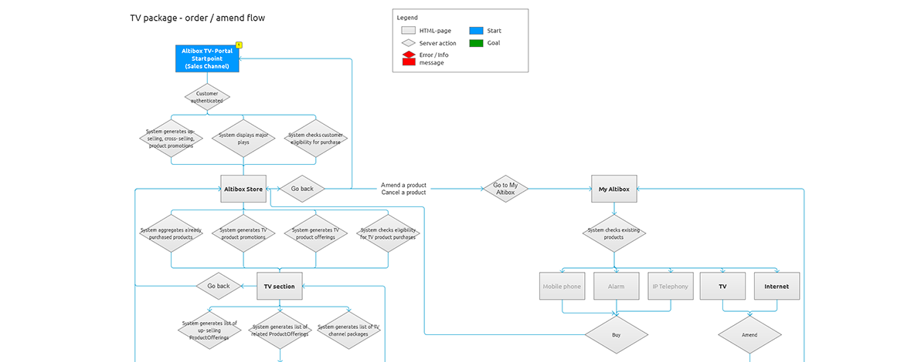

{{> header}}

<div class="article-wrapper">


    <h5>Method</h5>

    <h1>Flowchart</h1>

    <h2>A flowchart is a simple visualization of a process. It shows starting points, system responses, steps, choices, consequences, errors and success</h2>

    <div class="article-image">
        <div class="article-image-element">
            
              <div class="article-image-overlay">
                  <!--<h2><span class="highlight">Focus group meeting at Norwegian Maritime Authority where we discussed the certification needs of ship owners, ship builders and seafarers</span></h2>-->
              </div>
        </div>
    </div>


    <div class="article-text">

        <p>Complicated processes need a detailed flowchart to become clear. Often these are booking or purchase related processes with multiple start points and end points.
          Choices customers make en route to a goal may radically change the success factors, performance and experiences.

        </br></br>
        Flowcharts are especially fitting when there are many routes leading to the same end point, and we need to evaluate the flow for each path.
        Unwanted actions, timeouts, errors and other pitfalls need to be resolved with proper responses.

      </p>

    </div>

</div>


{{> footer}}
